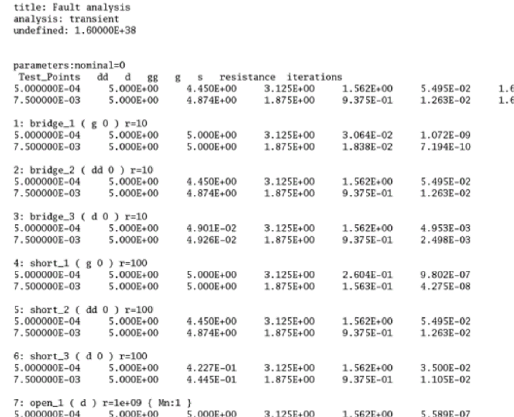
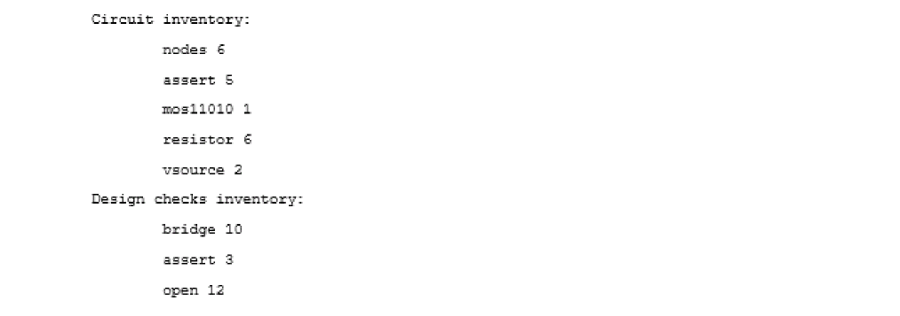
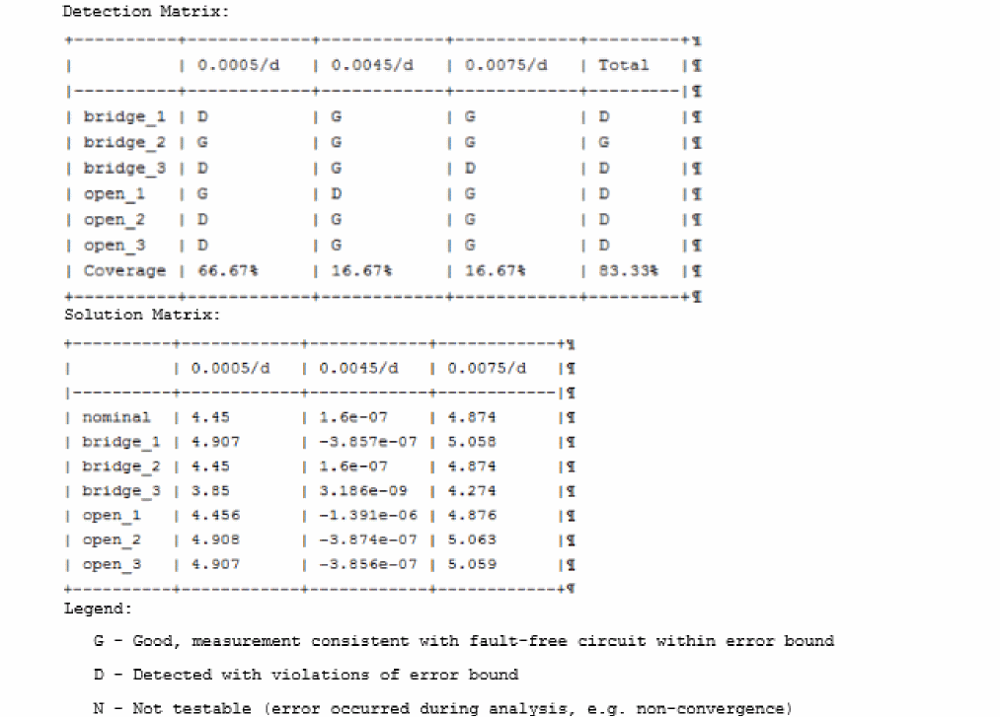

1
Analog Defect Simulation
An important concern of IC manufacturers is the processing defects that get introduced into the devices due to various issues in the manufacturing process. Some examples of such issues are open circuits caused by weak wire bonds or misaligned layers that lead to improper connections. Some of these issues can be observed in newly fabricated devices, but some are difficult to trace. Therefore, manufacturers look at performing a thorough inspection to reduce the potential causes of defects.
The Fault Simulation component of the Legato Reliability solution provides a capability to run defect-oriented tests on analog IC designs. These tests allow you to evaluate the ability to eliminate a die with manufacturing defects and resulting test escapes that cause field failures. It can also be used to optimize wafer test, reducing the number of tests required to achieve the target defect coverage by eliminating over-testing and potentially reducing the number of tests.
As a part of this solution, the following features have been provided in Cadence products:
-
Fault Analysis in Spectre Accelerated Parallel Simulator
This analysis in Spectre provides a transistor-level simulation capability that can be enabled in an analog test methodology to improve test coverage by identifying critical test patterns. It is very fast in handling large numbers of faults, and also very accurate when full fault analysis precision is required. -
Fault Simulation run mode in Virtuoso ADE Assembler
ADE Assembler provides an interactive simulation environment to create test setups, inject faults in the test designs, run the Fault Analysis using Spectre, and present the results for post-simulation analysis. Since analog designers are already familiar with ADE Assembler, running fault analysis is easy and quick.
Simulating Analog Defects in ADE Assembler
A typical fault analysis that simulates analog defects consists of the following three steps:
Injecting Faults in Design
Use the new Fault Setup assistant in ADE Assembler to specify the faults to be injected into designs. You can either specify individual faults to be injected in specific devices, or create rules for faults to be injected in multiple devices based on the specific criteria.
To insert individual faults, you can directly select objects on the schematic, and specify a resistance value for the fault.
To create faults using rules, use the Fault Rules form to specify the design hierarchy filter and fault insertion restrictions. Based on the settings in this form, a defect list is automatically created and displayed in the Fault Rule Preview section of this form.
For more details about the Fault Setup assistant and the Fault Rules form, refer to
Simulating Tests with Defects
When the setup is complete, choose the Fault Simulation run mode, specify run options and run simulations using Spectre APS or AMS Designer.
You can perform fault analysis by using one of these two approaches: direct fault analysis and transient fault analysis.
The following figure explains the difference between the two approaches:
Depending on your requirements for speed and accuracy, you can choose an appropriate approach, and specify settings for the simulation run.
For details about the settings for these methods, refer to
Analyzing Faults and Test Coverage
Analog fault analysis provides the capability to estimate fault coverage by generating a fault detection matrix. This matrix is obtained by comparing the faulty simulation results with nominal (faultless) data, as shown in the snapshot of the Detail-Transpose results view given below.
At each fault point, the simulator evaluates the outputs and calculates the count of detected and undetected faults.
You can also view the summary of these results in the new Fault results view. By default, this view shows the count of detected or undetected faults found while evaluating the expressions for each test.
You can use various filters or hyperlinks to focus on specific test, expression, or output, or to view faults in the design schematic.
You can check the fault coverage for each test, and further optimize the tests to improve the fault coverage based on the fault detection matrix.
Functional Safety Checks for Design
In addition to the fault detection matrix, the results of fault simulation can be used as part of functional safety analysis. This analysis mainly focuses on the effect of a failure during the lifetime of a device.
To generate this report, you need to have diagnostic or checker blocks in your design to validate the outputs of the functional block.
In functional safety applications, fault detection is tracked for both functional and diagnostic (checker) modules but reported separately. Using these results, you can generate a functional safety report that is aligned with the safety classification defined according to the ISO 26262 standard which classifies safe or dangerous, and detected or undetected defects.
The following figure shows an example of the functional safety report generated in ADE Assembler.
For more details, refer to
Simulating Analog Defects using Spectre at Command-Line
The flow of an analog defect simulation in Spectre is summarized in the following figure.
These steps are described below:
-
Specify faults to be checked. You can specify the faults in two ways:
-
By creating the
faultsblock to specify a fault list that defines the type and location of faults - By automatically generating faults from the design.
To create your own fault list, define thefaultsblocks. Spectre supports two types of faults - bridges (shorts) and opens, as shown in the example below.name faults <parameter=value> { bridge { <name> ( <node1> <node2> ) r = <expression> } short { <name> ( <node1> <node2> ) r = <expression> } open { <name> ( <node> ) r = <expression> [ c = <expression> ] { instance1[:terminal] [instance2[:terminal2]]… } } }
Alternatively, you can run Spectreinfoanalysis to generate the fault list based on the primitives, models, or subcircuits of a given design.
Syntax for Fault CreationnameList info what=bridges|opens where=file file=file_faultlist_1.scs [ faultblock=nameBlock [ faultdev=[...] [ faultres=resValue [ faultterminals=[...] ] ] ] ]
Here:-
faultblock: specifies the names of the fault blocks to be generated. Default is the name of info analysis. -
faultdev=[dev1 dev2...]: specifies the fault devices by primitive name, subcircuit name, or model name. Default value isall. -
faultterminals: specifies the terminals of fault devices for open or short handling. The default value isall terminals. -
faultres: specifies the resistance value for bridges or opens. The default value is10 Ohmsfor bridges and1 GOhmsfor opens. -
faultcap: specifies the capacitance value for open faults. The default value is0 F. -
faultduplicate: If set to yes, duplicate faults are included in all fault lists when multiple info analyses are specified for fault generation. Possible values areyesandno. -
faultdeviter: If set to yes, a separate faults list is generated for each iterated instance, that is, for instances whose name contains<number:[number]>. Possible values areyes, andno.
-
By creating the
-
Use an assert violation as a fault detection technique by specifying the boundaries. A fault is detected when an assert violation is triggered. To distinguish the checking of fault analysis from the regular assert check, you can add the
safecheckparameter in theassertstatement which is used in post-processing of assert violations to generate the functional safety report.safecheck=[ none | func | check ]
-
Specify the test points using any of the following three methods:
-
Specify the sweeping points by using the
faultstart,faultstop, andfaultstepparameters -
Specify the discrete time points using the
faulttimesparameter - List the test points in a separate file to be included in simulation.
Example 1faultstart=0.5m faultstop=1.0m faultstep=0.5m
Example 2faultimes = [0.5m 0.75m 1.0m]
Example 3faultfile = "./file_test_points.txt"
Test points in the./file_test_points.txtfile can be defined as follows://fault time point 0.5m 0.75m 1.0m
-
Specify the sweeping points by using the
-
Run simulation.
Running Direct Fault Analysis
Direct fault analysis uses sweep to iterate over the fault list and run the nested child analyses, such as tran, dc, ac, and so on.
The following is the use model for Spectre direct fault analysis:DirectName sweep faults=[ * | faultblock1...] nominal=[yes|no] [faultsid=[...]] [faultsname=[...]][faultsinst=[...]] { TranName tran stop=10u step=1p DCName dc ACName ac start=1e3 stop=1e9 }
Here:-
faults=[*]specifies the fault analysis sweeps for all faults. -
faults=[faultsblock..]specifies the fault analysis sweeps for the defined blocks. -
nominal=yesperforms nominal fault free simulation along with fault simulation. -
faultsid=[...]specifies the indexes of faults from the list to be considered during simulation. -
faultnames=[...]specifies the names of the faults from the list to be considered during simulation. -
faultsinst=[...]specifies the list of instances to be considered during fault simulation.
The following is an example of running the transient simulation for all faults blocks and the fault-free transient before the direct fault analysis starts.Directfault sweep faults=[*] nominal=yes { tran1 tran start=0 stop=3e-3 annotate=status }
Running Transient Fault Analysis
Spectre transient fault analysis requires a complete simulation test bench with fault list, test point(s), test signal(s)/port(s), and the fault method defined using the tran analysis statement. Fault analysis is ignored when this critical information is missing.
To perform transient fault analysis, you need to perform the following:-
Specify the test signals/ports to be checked using the save statement, as shown below.
save dd d gg g s
-
Specify the test points and fault method in the transient statement, as shown below.
leadtime tran start=0 stop=12e-3 errpreset=conservative maxiters=5
+ faultstart=0.5m faultstep=0.5m faultstop=7.5m + faultmethod=leadtime faultleadtime=0.1m
-
Run the simulation, as shown below.
%spectre +aps test_fault.scs +log test_fault.out -outdir out_faults
-
To run a full fault simulation with the faults injected at time zero and enable autostop, use the examples of the transient statement and the Spectre command, as shown below.
timezero tran start=0 stop=12e-3 errpreset=conservative maxiters=5 +annotate=status faulttimes=[7.5m] faultmethod=timezero +faultautostop=all
%spectre +aps test_fullfault.scs +log test_fullfault.out -outdir out_full/
-
-
View the fault simulation results saved in a table file where solutions at the test points are grouped for each fault. The name of the table is netlistname.tranname.table.
The following is a sample table file:
The first group with parameter nominal=0 shows the faultless result and serves as golden reference data. The signals specified in the save statement are the fault results that are printed in rows and are followed by fault resistance for bridges or opens and iteration number taken by the fault simulation to complete. -
Post-process the results data saved by the Spectre simulation
After the fault analysis is run, the list of faults is reported in circuit inventory and design checks inventory saved in the log file.
Post-processing the results of a direct fault analysis
For direct fault analysis, the result data is dumped in the raw directoryout_dfa/direct_fault.raw/.
You can use the Spectre binaryspectre_fsarptto generate the functional safety report based on the assert violation for Direct Fault Analysis on screen, or output to a file. The script reads the log file and looks for the path of sqldb file for violations.%.../bin/spectre_fsarpt out_dfa/direct_fault.log
%.../bin/spectre_fsarpt out_dfa/direct_fault.log -o report_file.txt
Post-processing the results of a transient fault analysis
For transient fault analysis, the Spectre log file also reports the transient fault simulation by printing the fault numbers which failed to converge at every test point(s).
Depending on the input statements given in the netlist file, a few report tables are also generated in theout_faultsdirectory. For example:tfa_test_fault.leadtime.table
tfa_test_fault.linear.table
You can use the Spectre binaryspectre_ddmrpt, to evaluate the fault table file and generate the defect detection matrix. An example report is shown below.
For more details, refer to the following topics: in Spectre® Classic Simulator, Spectre Accelerated Parallel Simulator (APS), and Spectre Extensive Partitioning Simulator (XPS) User Guide:- Fault Analysis
- Viewing Data Output of Transient Fault Analysis
- Post-processing for Functional Safety Report
Return to top